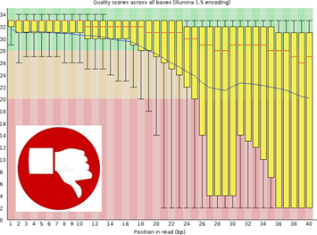
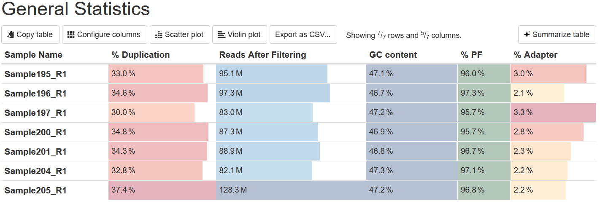
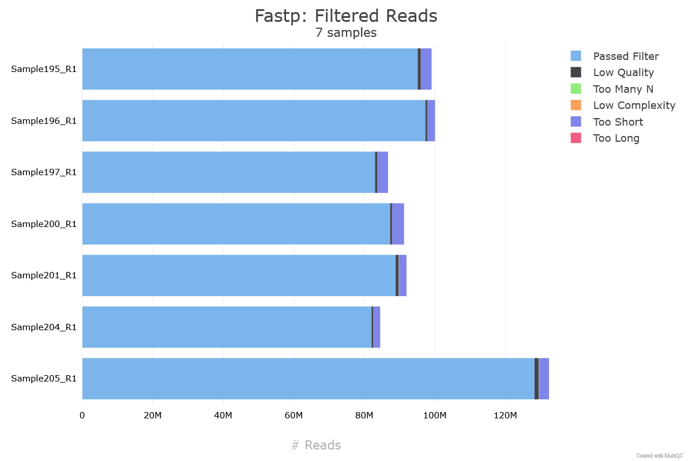
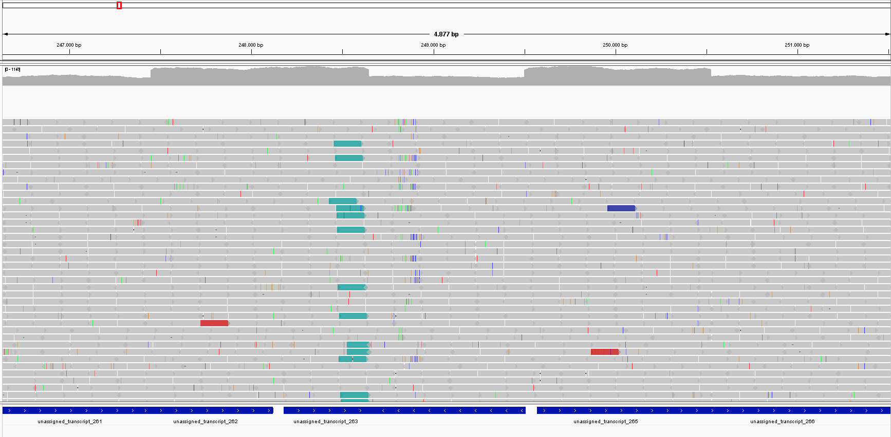
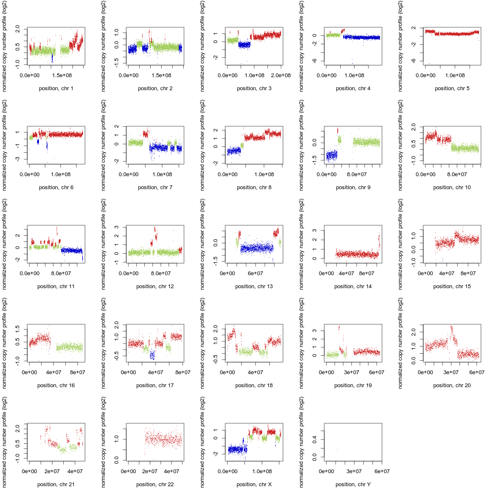

Step 1: Data Quality Control
Raw sequencing data (FASTQ files) is assessed for quality using tools like FastQC and MultiQC. This step detects issues such as adapter contamination, low-quality reads, or GC bias before continuing with further analysis.


Step 2: Trimming
Trimming removes adapter sequences and low-quality bases from reads. Trimmomatic, fastP or TrimGalore! are some of the tools used to keep only high-quality sequences, improving mapping efficiency and accuracy.


Step 3: Alignment
Cleaned reads can be aligned to a reference genome with different alignment software, such as bwa or bowtie. This step produces BAM files, containing the coordinates where each read maps and other measurements of alignment, as strand or quality. The aligned reads can be visualized in genome browsers like IGV.

Step 4: CNV detection
Depending on the type of sample and sequencing, a variety of tools can be used to detect CNVs: Control Freec, CNOGpro, CNVpytor... In general, this programs calculate the number of copies of each gene and report it. As an example, Control freec output includes a variety of files with CNVs, statistics, coverage plot (normalized copy number and
its log2), the GC profile and coverage ratio files.

In these coverage plots, the x-axis represents genomic coordinates along the chromosome, and the y-axis shows the normalized copy number profile (log₂ scale). To aid interpretation, each dot is colored according to copy number status: green for normal copy number, blue for losses, and red for gains (duplications or amplifications).